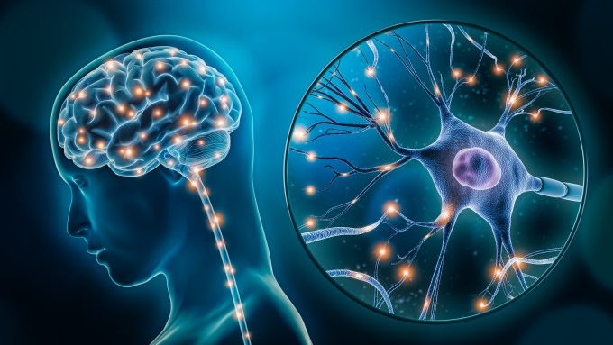

Teoría Dopaminérgica:
Los síntomas positivos de la esquizofrenia, como alucinaciones y delirios, están relacionados con un aumento de dopamina en regiones cerebrales, según Rafael Pinto (2021). Los antipsicóticos convencionales, como la clorpromazina y el haloperidol, inhiben los receptores de dopamina, reduciendo estos síntomas, aunque no son siempre efectivos y pueden tener efectos secundarios.
Teoría Glutamatérgica:
Se sugiere que las alteraciones en el sistema glutamatérgico, especialmente en los receptores NMDA, son clave en el desarrollo de la esquizofrenia. Estudios de Erick Kandel y otros (2021) indican que estas disfunciones pueden causar déficits cognitivos y síntomas negativos, afectando la comunicación neuronal y observándose cambios en los niveles de glutamato.
Teoría de la Estructura Cerebral:
Las anomalías cerebrales, como la reducción de la materia gris y el agrandamiento de los ventrículos, están vinculadas a la esquizofrenia. Investigaciones de Vita, De Peri y Deste (2012) indican que la disminución de la materia gris se asocia con déficits cognitivos y síntomas negativos, como la apatía, contribuyendo al deterioro en memoria y atención.
Teoría del Desarrollo:
El conflicto en la esquizofrenia surge de la interacción entre factores genéticos y ambientales, especialmente en etapas críticas del desarrollo cerebral, como la adolescencia. Investigaciones de Paul T. McGorry y Helen E. Smith (2017) indican que, aunque la predisposición genética es importante, factores ambientales como infecciones o traumas afectan la estructura y función cerebral, incluyendo la corteza prefrontal y los sistemas neurotransmisores.
Teoría de la Red Neuronal:
Se sugiere que las disfunciones en las redes neuronales del cerebro contribuyen a los síntomas de la esquizofrenia. Según "Neuroscience: Exploring the Brain" (2016), estas alteraciones afectan áreas clave como el sistema fronto-límbico y la corteza frontal, relacionadas con la emoción y la cognición. Alteraciones en neurotransmisores como la dopamina y el glutamato están asociadas con la sintomatología esquizofrénica.
